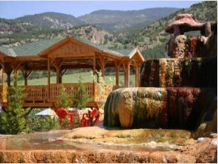
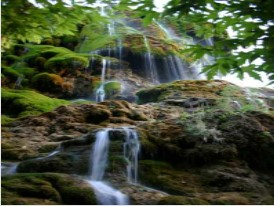
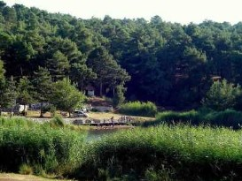

<h1>GEZİLECEK YERLER</h1>


<UL>
    <li>PAMUKKALE HİERAPOLİS ANTİK KENTİ</li>
</UL>

<ul>
    <li>KARAHAYIT KAPLICALARI</li>
</ul>

<ul>
    <li>GÜNEY ŞELALESİ</li>
</ul>

<ul>
    <li>SAKLI GÖL</li>
</ul>

<style>
    html {
        min-height: 100%; 
    }
    body {
        background: -webkit-linear-gradient(#ffffff, #C9DCB9); 
        background: -o-linear-gradient(#97a549, #C9DCB9); 
        background: -moz-linear-gradient(#97a549, #C9DCB9); 
        background: linear-gradient(#97a549, #C9DCB9); 
        background-color: #97a549; 
    }